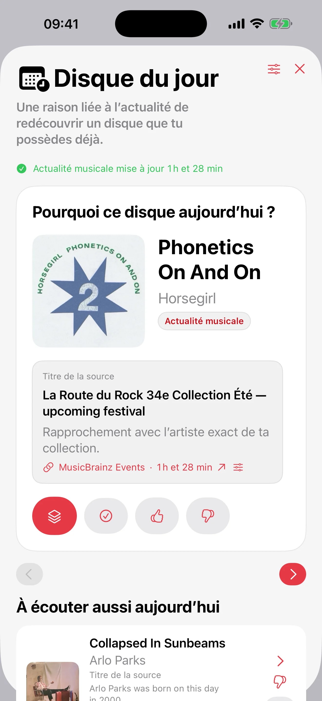

Tirage personnalisable
Choisissez un tirage purement aléatoire ou favorisez les disques moins écoutés, puis appliquez vos filtres et exclusions avant de lancer ou d’annuler le tirage.
Disponible maintenant
iPhone · iPad
Cataloguez vos vinyles et vos CD, puis choisissez le prochain disque à écouter avec le tirage aléatoire personnalisable, Mood Pick ou le Disque du jour. Votre collection reste privée, peut se synchroniser via iCloud entre iPhone, iPad et Mac, et vous accompagne aussi sur Apple Watch.

Record Picker
Cataloguez vos vinyles et CD, puis choisissez quoi écouter avec le tirage aléatoire, Mood Pick et le Disque du jour sur iPhone, iPad, Apple Watch et Mac.
 Sees The Light (2012)La Sera
Sees The Light (2012)La SeraChoisissez un tirage purement aléatoire ou favorisez les disques moins écoutés, puis appliquez vos filtres et exclusions avant de lancer ou d’annuler le tirage.
Scan de code-barres, MusicBrainz, Discogs en secours, pochettes personnalisées, doublons, exclusions, souhaits et historique restent faciles à suivre.
Pochette à gauche, métadonnées complètes à droite, bouton Pick centré et barre d'outils flottante pour choisir sans friction.
Une étoile rouge remplace la pastille Favori dans le bac: un tap sur iPhone ou iPad suffit pour marquer ou retirer un favori.
Pour une question sur l'app, l'import, les sauvegardes ou la confidentialité, utilisez le contact d'assistance public.